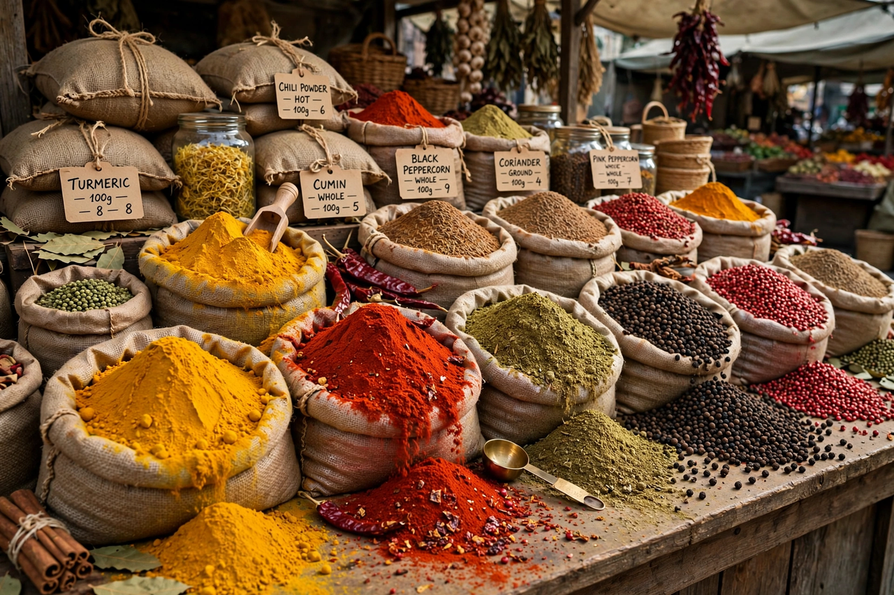

Spice trade

Main goods: Black pepper, cinnamon, cloves, nutmeg, ginger, cardamom
Key regions: Malabar Coast, Spice Islands (Maluku), Ceylon
The spice trade involved the development of the trade in spices and other luxury goods between civilisation centres in Asia, Northeast Africa and Europe over many centuries. Spices such as cinnamon, cassia, cardamom, ginger, turmeric and above all black pepper were known and used in antiquity for seasoning, medicine, embalming and ritual, and commanded very high prices in Europe because of their scarcity and the long chains of middlemen who handled them.
Routes
In the ancient and medieval periods, spices travelled by sea through the Indian Ocean monsoon routes to Arabia and Egypt, and overland via the Silk Road and the ports of the Levant, with Venice and Genoa dominating European distribution. The most coveted sources were India's Malabar Coast (pepper), Ceylon (cinnamon) and the Maluku Islands of Indonesia — the "Spice Islands", sole source of cloves, nutmeg and mace.
European competition
The desire to bypass intermediaries motivated the Age of Discovery: Vasco da Gama reached India in 1498, opening the Portuguese sea route, and the Portuguese, then the Dutch (through the VOC) and English (East India Company), fought for control of production, at times with extreme violence, as in the Banda Islands. As cultivation spread — and after the Columbian exchange added American chillies to the world's spice repertoire — prices fell and spices became ordinary commodities. Modern trade is dominated by producers such as India, Vietnam, Indonesia and China, and spices remain economically important but no longer strategic goods.